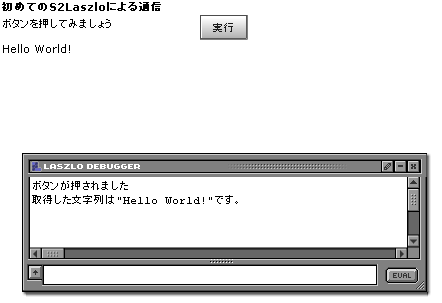

|
 |
|||||
S2Laszloとは// TODO セットアップ準備するものS2Laszloでは下記のものが必要になります。
このうち、JDKとTomcat、ANTについてはそれぞれのマニュアルを参照し、インストールしてください。 OpenLaszloは、OpenLaszloのダウンロードサイト からServlet Onlyとなっているものをダウンロードしてください。 コンパイルコンパイルは下記の手順により行われます。
最後まで終了すると、distディレクトリに下記の3つのファイルが出来上がります。
s2-laszlo-x.jarはS2LaszloのJavaモジュール(WEB-INF/libに配置)、s2-laszlo-lzx.zipはS2LaszloのLZXファイル(コンテキストルートに配置) s2-laszlo-exampoles.warはS2Laszloの使用例（サンプル）となっています。 配置s2-laszlo-examples.warをTomcatへデプロイすれば、Examplesを動かすことが可能となります。 Eclipseで使うには展開後のS2LaszloはEclipseのプロジェクトとして配置できるように、.project、.classpathを含めてあります。 また、Tomcatプラグイン等を利用している場合では、s2-laszlo-examples/src/main/webappディレクトリを Webアプリケーションのルートとして設定すれば、連携させることも可能です。 Example1まずは、簡単な例でLaszloとSeasar2に登録されているコンポーネントが通信できること
を確認してみます。ここでの目標はS2Laszloに慣れるです。 org.seasar.laszlo.examples.example1.Example1.java
public interface Example1 {
public String hello();
}
org.seasar.laszlo.examples.example1.Example1Impl.java
public class Example1Impl implements Example1 {
private String string;
public void setString(String string) {
this.string = string;
}
public String hello() {
return string;
}
}
このコンポーネントをdiconファイルに登録します。
example1.dicon
<components>
<component name="org.seasar.laszlo.examples.example1.Example1"
class="org.seasar.laszlo.examples.example1.Example1Impl">
<meta name="s2laszlo"/>
<property name="string">"Hello World!"</property>
</component>
</components>
つぎにLaszlo側を見ていきます。 Example1.lzx
<?xml version="1.0" encoding="UTF-8"?>
<canvas debug="true">
<include href="../../s2laszlo/library.lzx"/>
<view>
<simplelayout axis="y" />
<text><b>初めてのS2Laszloによる通信</b></text>
<view name="myFirstLaszlo">
<simplelayout axis="x" />
<text width="200">ボタンを押してみましょう</text>
<button>実行
<method event="onclick">
Debug.write("ボタンが押されました");
var t = { component: 'org.seasar.laszlo.examples.example1.Example1', method: 'hello' }
var r = { ref: parent.parent.result, attribute:'text', invokeObject:this, invokeMethod:'success' };
var e = {invokeObject:this, invokeMethod:'error'};
var s2l = new S2Laszlo( t, r, e );
s2l.invoke();
</method>
<method name="success" args="str">
Debug.write('取得した文字列は"' + str + '"です。');
</method>
<method name="error" args="errorObject">
Debug.write('エラーが発生しました。');
Debug.write('Exceptionクラス:' + errorObject['exception'] );
Debug.write('Exceptionメッセージ:' + errorObject['exceptionMessage']);
</method>
</button>
</view>
<text name="result" width="100"/>
</view>
</canvas>
この例では、buttonオブジェクトのイベント:onclick時のメソッドで、S2Laszloクラスを生成し、 実際の通信を行っています。以下にそのメソッド内で何をしているのかを細かく見ていきます。
データ取得用のオブジェクトとサーバ側へ渡したいパラメータについて
さらに詳しく見ていくことにします。
データ取得用オブジェクトには大きく2つの役割があります。
一つは取得したデータを入れる場所を指定すること、もう一つはデータ取得後に実行するメソッドを指定することです。 サーバ側へ渡したいパラメータは、invokeメソッドのパラメータとして指定します。 このinvokeメソッドのパラメータは可変長なので、サーバ側にあるメソッドにあわせて パラメータを渡すことが可能です。パラメータの順番も同一になります。 この例ではパラメータがないため、何も渡していないのですが、 Java側のメソッドがStringを引数とする場合、下記のように指定することになります。
s2laszlo.invoke('文字列');
今回の例では、渡す値はないため、invoke()という形で実行しています。
最後に実際にブラウザからアクセスしてみます。URLは下記のとおりです。 実際に下記のような画面が表示されます。ボタンを押したときに、サーバにアクセスがあったことを示すログ、 ブラウザに、取得した文字列と、Debugウインドにログが出力されれば成功です。 Example2Example1でS2Laszloの基本を説明しました。 この例では、Laszlo側とJava側でデータを送受信した際にどのような型変換が行われるかを確認します。 ここでの目標はLaszloとJavaの型の変換になれるです。 今回は初めに結果を示しておきます。 LaszloからJavaへのデータ送信時の型変換
JavaからLaszloへのデータ受信時の型変換
それではSeasar2側を見ていきます。ここでは、Javaのインターフェースと その実装を下記のように用意します。 examples.2.Mapping.java// TODO MappingImpl.java examples.2.MappingImpl.java// TODO MappingImpl.java examples.2.ExampleBean.java// TODO ExampleBean.java |